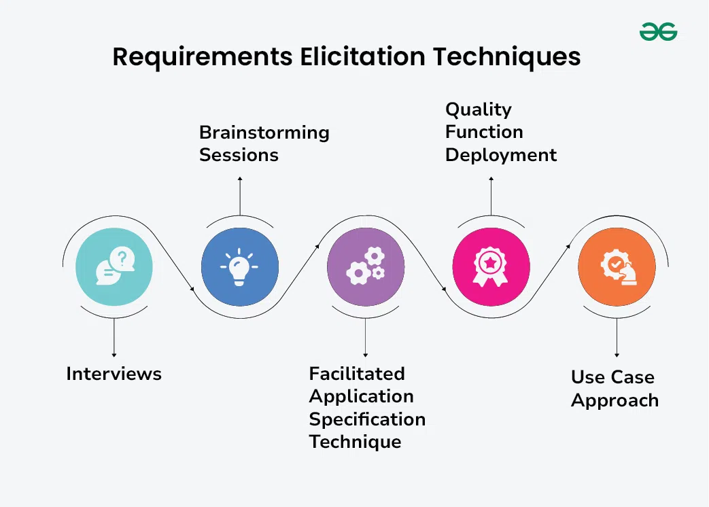
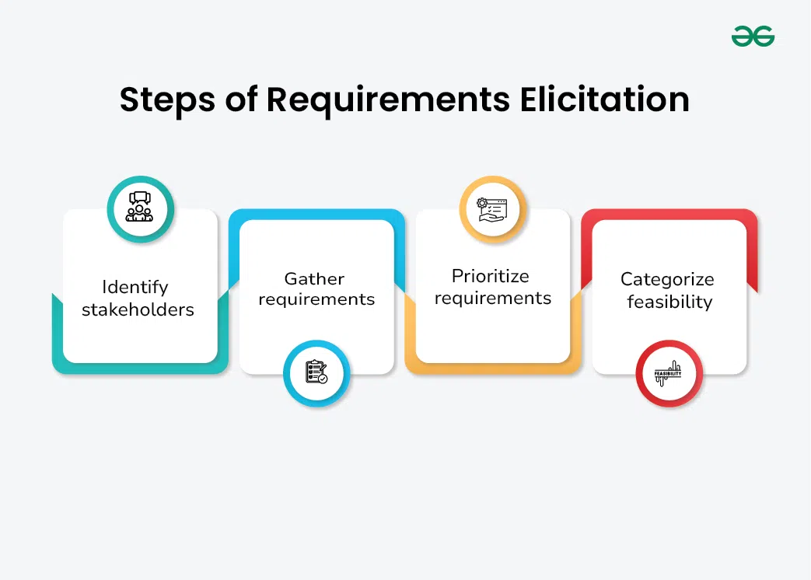

4.3 Elicitation / Requirements Elicitation
Requirements elicitation is the process of gathering, discovering, and extracting requirements from stakeholders, existing systems, documents, and the problem domain. It is the first active step after feasibility approval and is often the most difficult RE activity because stakeholders may not fully understand their own needs or may express them inconsistently.
Importance of elicitation
- Elicitation is the primary source of all downstream requirements — errors here propagate through design, coding, and testing.
- It builds stakeholder engagement and trust by involving users early in the project.
- It reveals hidden assumptions, constraints, and conflicts before they become expensive to fix.
- It provides the raw material for analysis, specification, and validation in later RE phases.
Common elicitation techniques

- Interviews: One-on-one or group conversations with stakeholders to explore needs, workflows, and pain points. Structured interviews follow a prepared question list; unstructured interviews allow open exploration.
- Brainstorming: A facilitated group session that generates a large number of ideas quickly without immediate criticism, useful for discovering features and constraints.
- Facilitated Application Specification Technique (FAST): A joint workshop where customers and developers meet together to define requirements collaboratively, reducing miscommunication.
- Quality Function Deployment (QFD): A structured method that translates customer needs (the "voice of the customer") into technical requirements and prioritises them by importance.
- Use cases / scenarios: Narrative descriptions of how users interact with the system to achieve goals; they clarify functional requirements in concrete terms.
- Observation / ethnography: Analysts watch users perform their actual work to discover requirements users cannot articulate in an interview.
- Questionnaires / surveys: Useful when many stakeholders are geographically dispersed or when quantitative preference data is needed.
- Document analysis: Review of existing manuals, regulations, legacy system specs, and business process documents to extract implicit requirements.
- Prototyping: Building a quick mock-up so stakeholders can react to something tangible; closely linked to prototyping in Topic 2 §2.14.
Steps in the elicitation process

- Identify stakeholders: List all people and organisations affected by or influencing the system.
- Understand the problem domain: Learn the business context, terminology, and existing workflows before asking detailed questions.
- Select elicitation techniques: Choose methods appropriate to stakeholder availability, project size, and domain complexity.
- Conduct elicitation sessions: Gather raw requirements using the selected techniques.
- Record and organise findings: Document needs in a structured form ready for analysis (see §4.5).
- Validate with stakeholders: Confirm that recorded needs accurately reflect what was intended.
Advantages and disadvantages
- Advantages: Direct contact with stakeholders improves accuracy; multiple techniques compensate for individual weaknesses; early involvement reduces late change requests.
- Disadvantages: Stakeholders may give conflicting information; sessions are time-consuming; dominant personalities can skew group techniques; users may request unnecessary features.
Exam question — Elicitation techniques
Q: What is requirements elicitation? Describe at least four techniques and their appropriate use.
Model answer points:
- Define elicitation as discovering/gathering requirements from stakeholders and domain.
- Explain importance: primary source of requirements, stakeholder engagement.
- Describe interviews, brainstorming, FAST, QFD, use cases, observation, prototyping.
- Outline elicitation steps: identify stakeholders → understand domain → select techniques → conduct → record → validate.
- Mention advantages (accuracy, early involvement) and disadvantages (conflicts, time, bias).